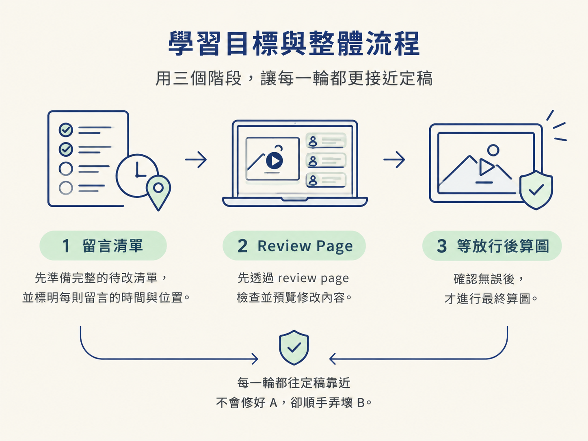
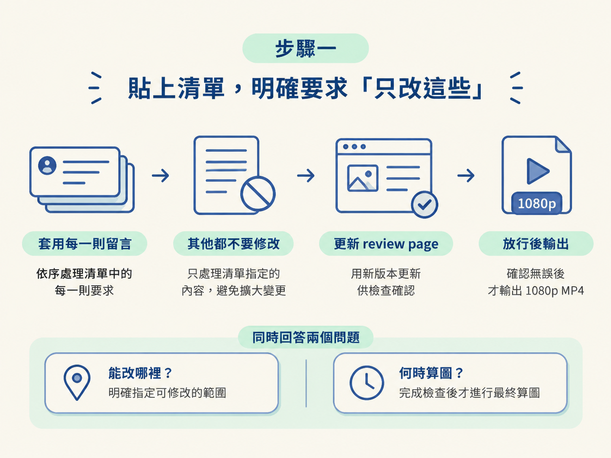
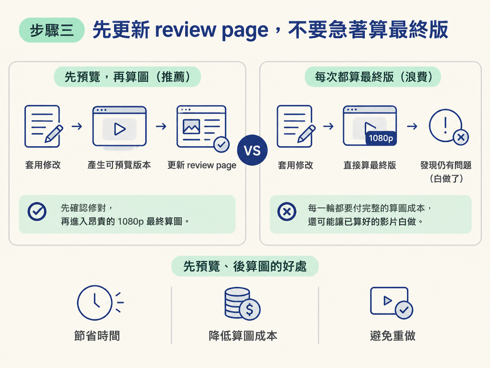
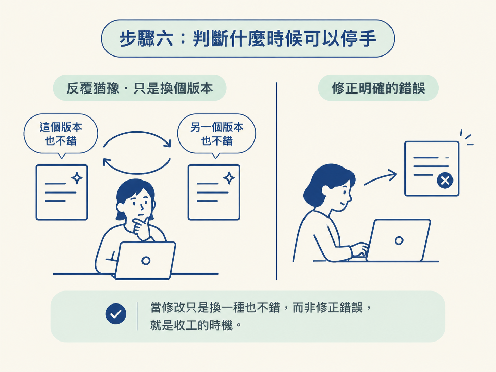

這一課的目標，是把已經算好的影片穩定地推向定稿。你會把上一課整理好的時間碼留言清單交給 agent，要求它只修改清單列出的項目，其他內容完全不動；接著先更新可預覽的 review page，等你確認修改正確後，再輸出最終的 1080p MP4。
動手前，你需要先有一份完整的待改清單，而且每一則留言都要標明時間與位置。整條流程可以想成替影片裝上護欄：清單限定「改哪裡」，review page 讓你先檢查，最後的算圖則等你放行後才開始。這樣每一輪都能往定稿靠近，不會修好 A，卻順手弄壞 B。

上一課結束時，你手上已經有一份帶著時間與位置的留言清單。接下來看似只要把清單貼回去，請 agent 逐項修改就好。
問題在於，如果你只說「照這些留言改」，agent 可能會順便調整它認為可以更好的地方。結果可能是：你在意的 A 修好了，但原本已經確認過的 B 被改壞。等你再檢查一輪，問題反而變多，只好重新開始。
所以這一課的核心做法很明確：把重算範圍鎖在你列出的項目上，先確認預覽版，再算最終版。你要的是精準執行清單，而不是讓 agent 重新替整支影片做一次自由發揮。
把上一課複製的完整留言清單貼進聊天視窗，並在前面加上這段指令：
Here are my comments on this version: [paste all
your comments]. Each one has its time and the
spot, sound or trim it's about. Apply every
comment and change nothing else. Then update the
review page with the new version so I can check
it. Don't render the final video until I say
it's done. When I do, render it as a 1080p MP4.把中括號換成你的留言清單。這段指令依序交代了四件事：
這四個要求一起處理了兩個關鍵問題：到底能改哪些地方，以及什麼時候才能進入最終算圖。

整段指令中，最直接防止回歸的句子是 Apply every comment and change nothing else，也就是「套用每一則留言，其他都不要動」。
這句話會把 agent 的自由度縮到最小。這一輪的任務不是「把影片變得更好」，而是「精準執行這份清單」。
你之所以只列出這幾項，通常代表其他部分已經看過並且認可。一旦 agent 自作主張去修改沒有被點名的地方，你就會失去原本的基準：不再確定哪些內容是自己確認過的，哪些是後來被順手改掉的。沒有穩定的基準，每一輪修改就很難真正收斂。
手動輸入的版本也一樣。那份留言清單最後同樣要寫上 change only what i listed and keep everything else exactly as it is。無論清單是複製而來，還是自己打的，這個限制都不要省略。
指令中的 Don't render the final video until I say it's done，也就是「我說完成之前，不要算最終版」，是另一道重要護欄。
完整重算影片需要時間，而這一輪修改很可能還不是最後一輪。因此，流程要拆成兩段：
如果每一輪都直接要求輸出最終版，就等於每改一次都支付一次完整的算圖成本。更麻煩的是，只要這一輪還有問題，那支已經算好的影片就白做了。先預覽、後算圖，能把昂貴的步驟留到真正需要的時候。

review page 更新後，回去把影片播一遍。這次不要只憑整體感覺，而要對照留言清單，一項一項確認：
因為你當初是一則留言只描述一件事，現在也能逐項勾銷。若有項目尚未修好，或檢查時發現新的小問題，就再留下幾則留言，重新跑一輪。
每一輪都只處理明確列出的問題，往來通常不需要太多次。模型越強，需要的修正回合就越少，但檢查與放行仍然要由你掌握。
等你看著 review page，確定「這就是我要的版本」，才請 agent 算最終版。輸出規格是 1080p MP4。
這項規格其實已經寫在指令裡。只要 Don't render the final video until I say it's done 這句限制還在，agent 就會停留在預覽版本，等待你放行。
最後算圖是整條流程中成本最高的一步，因此應該留到你真正滿意的時刻再觸發。先讓 review page 承擔檢查工作，確認無誤後再輸出最終檔案，才不會把時間和算圖成本花在尚未定稿的版本上。
執導沒有一個客觀的滿分，你需要判斷的是：什麼時候已經夠好了。
有一個例子很能說明這件事。創作者先在時間軸上做了一版比較複雜的卡片編排，接著請 agent 把卡片全部拿掉，讓畫面從全螢幕稍微拉近，只留下文字。最後，他選擇最乾淨、沒有卡片的版本當作開場，原因很單純：讀起來更順。
這個選擇沒有唯一的標準答案，因為它涉及你想帶給觀眾的感覺。如果你發現自己繼續修改，只是在「這個版本也不錯」和「另一個版本也不錯」之間來回，而不是在修正一個明確的錯誤，那就是可以收工的時候。

此時就把最終版算出來，結束這一輪執導。
如果你在這一輪中反覆提醒 agent 某些規則，例如「標題永遠不要擋到臉」或「講到某個詞時一定要出現圖示」，這些規則就值得整理下來。
下一次做影片之前，可以請 agent 把這次的設計系統與所有回饋整理進你的 /animate skill。這樣 agent 下次一開始就知道什麼是好的設計。這一輪的成果也就不只留在這支影片裡，而能成為之後製作時可重複使用的規則。
完整的一輪收尾流程會長這樣：
你要驗證的結果不是「改了很多地方」，而是每一輪都只動你點名的地方。影片會在保留已確認內容的前提下，逐步往定稿收斂，而不是越修越亂。
限定範圍重渲染的核心，是兩句話：「套用每一則留言，其他都不要動」與「我說好之前不要算最終版」。前者鎖住 agent 的修改範圍，避免它順手改壞已經確認的內容；後者把最昂貴的算圖留到你檢查完成之後。實際做法是貼上留言清單、更新預覽版、回到 review page 逐項確認，必要時再跑一輪，最後才輸出 1080p MP4。至於什麼時候停手，靠的是品味判斷：如果你只是在「換一種也不錯」，而不是在「修正一個錯」，就可以收工了。
做完這一輪，你就有了一套從已算好的影片走向定稿的收尾流程：建立清楚的修改範圍、用精準留言指定問題、透過 review page 成批檢查，再用限定範圍的重渲染把影片收乾淨。下一步，是把這套流程中的規則整理成可重複使用的 skill。